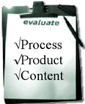

Evaluate Process, Product and Understanding of Content
The emphasis at this stage is on assessing not only the final product but also the process followed to create the product and the knowledge gained in the process. Too much emphasis on product can result in the copy and paste phenomenon and plagiarism. Students can and should be active participants in this evaluation. There are many tools that teachers can use to involve students in the evaluation and assessment process.
Information Skills Rating Scale -- a useful but simple tool to help students evaluate their research process.